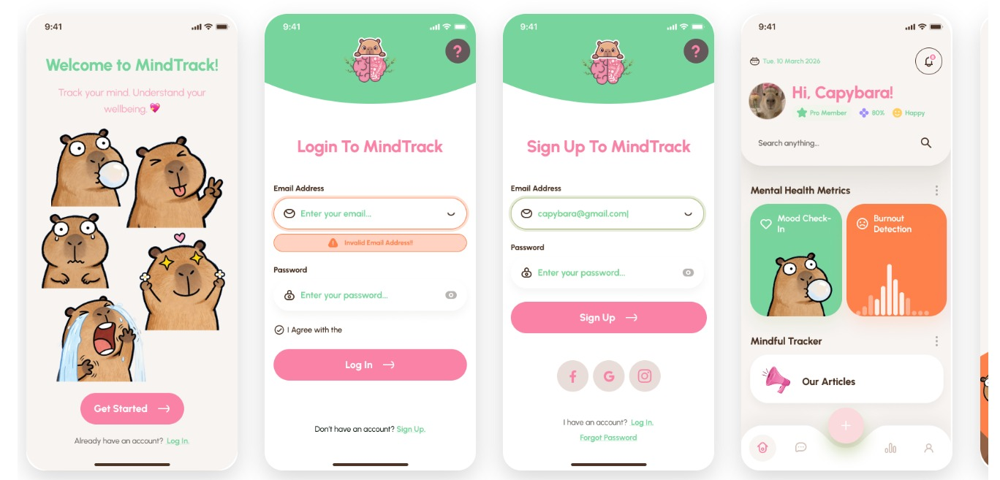

MindTrack Web Platform, Human Computer Interaction Project
2026
- Designed and deployed an intuitive, user-centric web interface hosted on GitHub Pages, following key UI/UX design heuristics to optimise task flows and usability
- Conducted interface evaluation and iterative prototyping to improve front-end layout readability, interactive navigation, and accessibility standards.